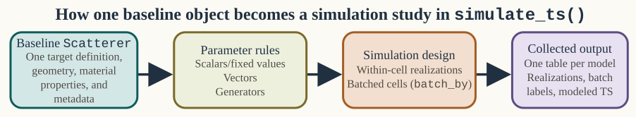
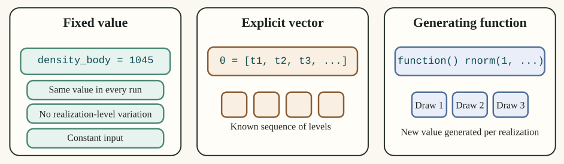
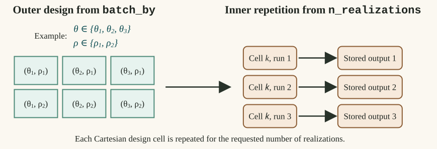
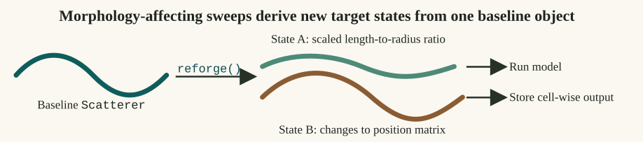
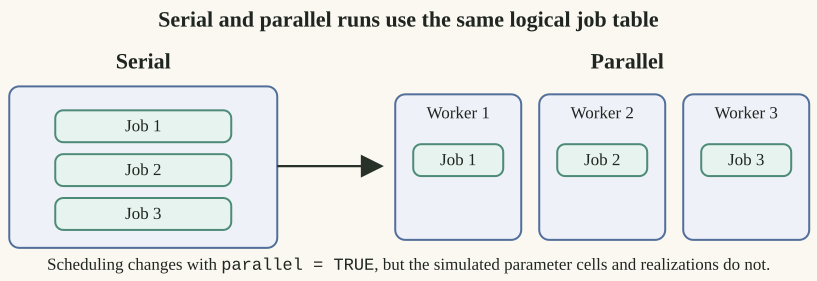

Simulation and Parameter Sweeps
Source:vignettes/simulation-parameter-sweeps/simulation-parameter-sweeps.Rmd
simulation-parameter-sweeps.RmdIntroduction
Parameter sweeps are especially useful when a model has to be interpreted over the orientation, size, and contrast ranges emphasized in benchmark and survey studies (Jech et al. 2015; Demer and Conti 2005).
Single deterministic model runs are useful, but many acoustic questions are inherently distributional. The package therefore includes simulation tools for repeated realizations, parameter batching, and ensemble summaries.

This page is about how to turn a single target description into a structured family of model runs. The core idea is that the object remains fixed as the bookkeeping container, while selected inputs are varied across realizations or across a parameter grid.
Main entry point
The main current simulation interface is simulate_ts().
It supports repeated draws of user-specified parameters, optional
batching over one or more variables, and optional parallel
execution.
In other words, simulate_ts() is a workflow wrapper
around repeated target_strength() calls. It does not
replace the usual model layer. It automates the process of rebuilding a
set of parameters, optionally reworking the object, running the model,
and collecting the outputs into a set of tidy result tables.
library(acousticTS)
shape_obj <- cylinder(
length_body = 0.05,
radius_body = 0.003,
n_segments = 80
)
obj <- fls_generate(
shape = shape_obj,
density_body = 1045,
sound_speed_body = 1520
)
res <- simulate_ts(
object = obj,
frequency = seq(38e3, 120e3, by = 6e3),
model = "DWBA",
n_realizations = 5,
parameters = list(
theta_body = function() runif(1, min = 0.5 * pi, max = pi),
density_body = 1045
),
parallel = FALSE
)## ====================================
## Scatterer-class: FLS
## Model(s): DWBA
## Simulated parameters: theta_body, density_body
## Total simulation realizations: 5
## Parallelize TS calculations: FALSE
## ====================================
## ====================================
## Preparing sequential simulations
## ====================================
## Simulations complete!
## ====================================The return value is a named list with one data frame per model.
Parameter specification
The scratch simulation notes are worth keeping in mind here because
they clarify the three main parameter modes supported by
simulate_ts():
- single fixed values,
- explicit vectors,
- generating functions that return one draw at a time.
When batch_by is supplied, the selected parameters
define a Cartesian grid and each grid cell is then repeated for
n_realizations. That distinction between batch cells and
within-cell draws is the core conceptual point of the interface.
Those three modes answer different questions:
- fixed values are for constants that should be repeated in every realization,
- explicit vectors are for a known set of realization-level values,
- functions are for stochastic draws generated on demand.
The distinction matters because it separates deterministic sweeps from uncertainty propagation.

simulate_ts(): fixed constants, explicit vectors, and
per-realization generating functions.Fixed values are copied into every run unchanged. Explicit vectors supply a known sequence of values. Generating functions do not provide a pre-listed table at all. They create a new draw whenever a realization is built. That difference is what separates a design grid from on-the-fly uncertainty propagation.
parameters <- list(
theta_body = seq(0.5 * pi, pi, length.out = 5),
density_body = function() rnorm(1, mean = 1045, sd = 5),
sound_speed_body = 1520
)In this example, theta_body is an explicit set of
values, density_body is random, and
sound_speed_body is held fixed.
Batching versus realizations
The most important conceptual distinction in the interface is the difference between a batched parameter and a realization-level parameter.
-
batch_bycreates a grid of settings that should each be kept distinct in the output. -
n_realizationscontrols how many repeated runs are performed within each grid cell.
Suppose theta_body and density_body are
both placed in batch_by. Then the simulation does not treat
them as uncertain draws around one target. It treats them as a design
grid whose combinations are all run separately.
res_grid <- simulate_ts(
object = obj,
frequency = seq(38e3, 120e3, by = 6e3),
model = c("DWBA", "SDWBA"),
n_realizations = 3,
parameters = list(
theta_body = seq(0.5 * pi, pi, length.out = 4),
density_body = c(1035, 1045, 1055)
),
batch_by = c("theta_body", "density_body"),
parallel = FALSE
)## ====================================
## Scatterer-class: FLS
## Model(s): DWBA, SDWBA
## Batching parameter(s): theta_body, density_body
## Simulated parameters: theta_body, density_body
## Total simulation realizations: 36
## Parallelize TS calculations: FALSE
## ====================================
## ====================================
## Preparing sequential simulations
## ====================================
## Simulations complete!
## ====================================Here the output contains one row structure per model, per frequency, per batch cell, and per realization. That is why batched jobs can grow quickly.

batch_by creates Cartesian
design cells and n_realizations nests repeated runs inside
each cell.This is the core simulation structure in the current interface. Batched parameters define the outer design. Realizations live inside that design. If a user loses track of that nesting, it becomes very easy to misread deterministic design cells as random draws or random draws as deterministic sweep levels.
Parameters that modify the object
Not every simulated parameter is a simple scalar passed into
target_strength(). Some parameters alter the working object
itself. This is especially important for reshaping workflows.
The current simulation code supports two broad cases:
- parameters matching accepted
reforge()inputs can trigger per-realization resizing or reparameterization, - parameters matching object-component fields can be inserted into the working object before the model call.
This means simulate_ts() can be used not just for
orientation or density perturbations, but also for controlled morphology
studies.
body_shape <- arbitrary(
x_body = c(0.00, 0.02, 0.05, 0.08),
zU_body = c(0.001, 0.004, 0.004, 0.001),
zL_body = c(-0.001, -0.004, -0.004, -0.001)
)
bladder_shape <- arbitrary(
x_bladder = c(0.02, 0.04, 0.06),
zU_bladder = c(0.0012, 0.0018, 0.0012),
zL_bladder = c(-0.0012, -0.0018, -0.0012)
)
obj_sbf <- sbf_generate(
body_shape = body_shape,
bladder_shape = bladder_shape,
density_body = 1045,
sound_speed_body = 1520,
density_bladder = 1.2,
sound_speed_bladder = 343
)
res_shape <- simulate_ts(
object = obj_sbf,
frequency = seq(38e3, 120e3, by = 6e3),
model = "DWBA",
n_realizations = 2,
parameters = list(
body_scale = c(0.9, 1.1),
swimbladder_inflation_factor = c(0.8, 1.2)
),
batch_by = c("body_scale", "swimbladder_inflation_factor"),
parallel = FALSE
)## ====================================
## Scatterer-class: SBF
## Model(s): DWBA
## Batching parameter(s): body_scale, swimbladder_inflation_factor
## Simulated parameters: body_scale, swimbladder_inflation_factor
## Total simulation realizations: 8
## Parallelize TS calculations: FALSE
## ====================================
## ====================================
## Preparing sequential simulations
## ====================================
## Simulations complete!
## ====================================This is one of the cleanest ways to keep a morphology-sensitivity analysis tied to the same baseline target.

Morphology-affecting parameters do not behave like ordinary scalar metadata. They change the working target itself before the model is run. The resulting simulations should therefore be interpreted as distinct geometric states derived from one baseline object, not as repeated evaluations of a single unchanged shape.
When simulation is useful
Simulation or batched evaluation is most useful when:
- orientation is uncertain,
- material properties are better treated as distributions than as fixed values,
- multiple body lengths or frequencies must be screened systematically,
- model sensitivity is of greater interest than a single nominal prediction.
In practice, this means simulation is less about “making the model stochastic” and more about mapping the consequences of uncertainty, variability, or design decisions.
Interpreting the output
The returned list is model-centered. Each element is a data frame that carries the realization index, any batched parameters, and the model outputs. That organization is deliberate: it makes downstream plotting or aggregation straightforward.
names(res_grid)## [1] "DWBA" "SDWBA"
head(res_grid$DWBA)## model realization theta_body_idx density_body_idx theta_body density_body
## 1 DWBA 1 1 1 1.570796 1035
## 2 DWBA 1 1 1 1.570796 1035
## 3 DWBA 1 1 1 1.570796 1035
## 4 DWBA 1 1 1 1.570796 1035
## 5 DWBA 1 1 1 1.570796 1035
## 6 DWBA 1 1 1 1.570796 1035
## frequency ka f_bs sigma_bs TS
## 1 38000 0.4775221 -0.0001558136-7.493349e-20i 2.427787e-08 -76.14790
## 2 44000 0.5529203 -0.0002007945-1.118128e-19i 4.031842e-08 -73.94497
## 3 50000 0.6283185 -0.0002476169-1.566886e-19i 6.131414e-08 -72.12439
## 4 56000 0.7037168 -0.0002946149-2.087997e-19i 8.679795e-08 -70.61491
## 5 62000 0.7791150 -0.0003400723-2.668395e-19i 1.156492e-07 -69.36857
## 6 68000 0.8545132 -0.0003822717-3.289791e-19i 1.461317e-07 -68.35256
head(res_grid$SDWBA)## model realization theta_body_idx density_body_idx theta_body density_body
## 1 SDWBA 1 1 1 1.570796 1035
## 2 SDWBA 1 1 1 1.570796 1035
## 3 SDWBA 1 1 1 1.570796 1035
## 4 SDWBA 1 1 1 1.570796 1035
## 5 SDWBA 1 1 1 1.570796 1035
## 6 SDWBA 1 1 1 1.570796 1035
## frequency f_bs sigma_bs TS TS_sd
## 1 38000 -9.446326e-05-7.048767e-07i 9.929385e-09 -80.03078 -85.53002
## 2 44000 -1.211794e-04-3.532537e-06i 1.586274e-08 -77.99622 -83.23411
## 3 50000 -1.522836e-04-6.196302e-06i 2.509300e-08 -76.00447 -81.99254
## 4 56000 -1.769631e-04+2.008750e-06i 3.424638e-08 -74.65385 -80.05401
## 5 62000 -2.043078e-04-3.919300e-06i 4.592003e-08 -73.37998 -78.60042
## 6 68000 -2.288323e-04+6.778744e-06i 5.734514e-08 -72.41503 -77.57528Common downstream summaries include:
- mean and quantiles of
TSby frequency, - variance decomposition by orientation or material parameter,
- pairwise model differences across matched grid cells,
- screening plots to identify nonlinear regions before deeper analysis.
Parallel execution on Windows
On Windows, parallel execution uses PSOCK workers rather than forked processes. That has two practical consequences:
- startup overhead is more noticeable for small jobs,
- larger simulations benefit more clearly from parallelization than tiny exploratory runs.
For this reason, parallel = FALSE is often the right
default while debugging a workflow, even if parallel = TRUE
is the right choice for production runs.
res_parallel <- simulate_ts(
object = obj,
frequency = seq(38e3, 120e3, by = 2e3),
model = "DWBA",
n_realizations = 100,
parameters = list(theta_body = function() runif(1, 0.5 * pi, pi)),
parallel = TRUE,
n_cores = 4
)
Parallelization changes scheduling, not interpretation. The same batched cells and realization-level jobs still exist. Parallel execution simply distributes them across workers. That is why debugging is often easier in serial mode first, even when the final production run is parallel.
Practical cautions
The simulation workflow can become expensive quickly, especially when several parameters are batched simultaneously. The main practical risks are:
- combinatorial growth in the evaluation grid,
- unnecessary parallel overhead for small jobs,
- confusion between realization-level randomness and batch-level parameter sweeps.
Two additional cautions are worth keeping in mind:
- if a parameter sequence is meant to represent uncertainty, placing
it in
batch_bychanges the interpretation from random variation to deterministic design cells, - if geometry-affecting parameters are varied, the results should be interpreted as new target states rather than as mere perturbations of one fixed shape.
For that reason, this page should be read together with FAQ and troubleshooting.
On Windows, parallel execution uses PSOCK workers rather than forked processes, so larger simulations benefit from being planned deliberately instead of relying on a maximal batch grid by default.
Relationship to anneal()
The current documentation and source code indicate that
simulate_ts() is expected to give way to
anneal() in future releases. The important point for
current users is that the workflow logic on this page remains useful
even if the interface evolves.
The stable ideas are:
- keep one object as the baseline target description,
- separate batch design from within-cell variation,
- make model comparison operate on matched simulation cells,
- summarize in linear or logarithmic units according to the scientific question.
Relationship to future interfaces
The current simulation interface is already useful, but the package documentation indicates that this part of the workflow may continue to evolve. This article should therefore be read as a workflow guide rather than as a claim that the current interface is final.